You must be familiar with different kitchen utensils. What
are the common materials used to make utensils for cooking?
Let us do an activity. Take some water in a flat bowl. Place a
wooden ladle and a steel ladle in it and let it boil. Touch the
ladles and find out which one is hotter. Why is it so?
Why are you warned against handling iron like objects during
thunder and lightning?
85
Page 86
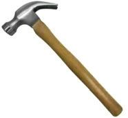
Figure fig_ch05_p086_01 (Page 86)
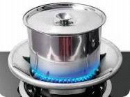
Figure fig_ch05_p086_02 (Page 86)
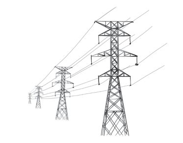
Figure fig_ch05_p086_03 (Page 86)
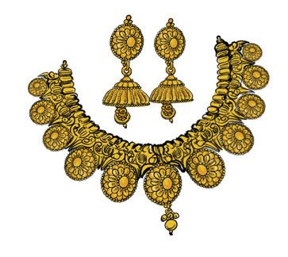
Figure fig_ch05_p086_04 (Page 86)
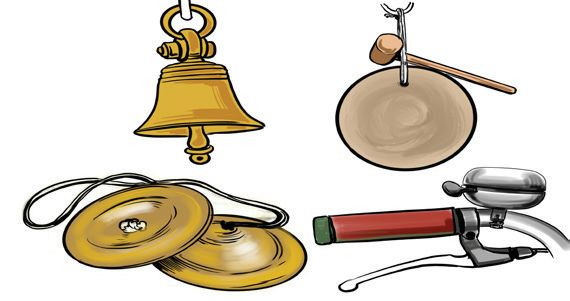
Figure fig_ch05_p086_05 (Page 86)
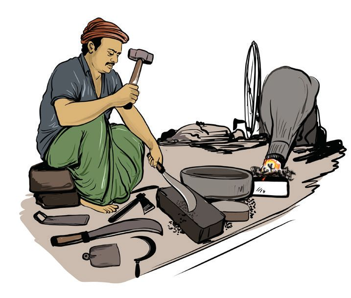
Figure fig_ch05_p086_06 (Page 86)
BASIC SCIENCE - VIII
Find out the characteristics of metals as indicated in the above situations.
Device/Article
The characteristic property of the metal
...............................................................
What are the other characteristics of metals familiar
to you?
Metals like iron, copper, gold, silver and aluminium are
familiar to us because they are widely used in everyday
life. What are the other metals familiar to you?
Write a short note highlighting the characteristic
properties of different metals.
Define metals on the basis of the characteristics
mentioned above.
Malleability
Have a look at the picture.
Fig. 6.2
86
What is the blacksmith doing? What changes occur
when a piece of metal is hammer blown?
Page 87
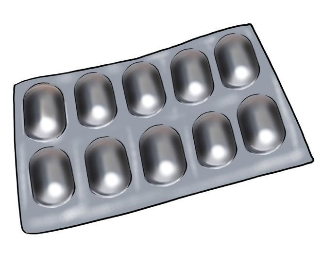
Figure fig_ch05_p087_01 (Page 87)
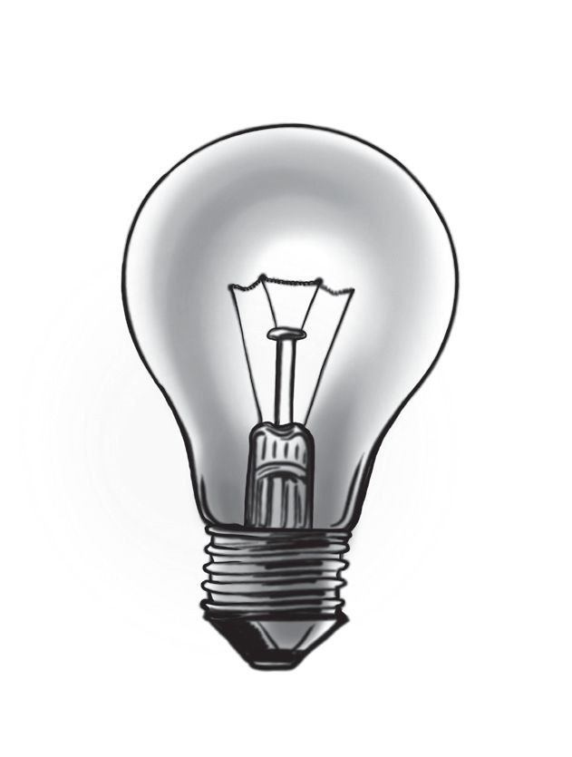
Figure fig_ch05_p087_02 (Page 87)
BASIC SCIENCE - VIII
Strike an aluminium wire with a hammer in the same
manner.
Haven't you seen aluminium foil which is used to
wrap tablets and food materials? Which characteristic
property of metals is used in this case?
Generally metals can be hammered and flattened into
thin sheets. This characteristic property of metals is
known as malleability.
Fig. 6.3
However, it is not possible to hammer all metals into
thin sheets in the same manner.
All metals are not malleable to the same extent.
Gold is the most malleable metal.
Write examples for utilising the malleability of metals.
• Metal sheets are used to make roofing of buildings.
•
•
Ductility
Filament of the bulb given in the figure is made of very
thin wires of tungsten.
Metals can be drawn into thin wires.
This property of metals is known as Ductility.
Metals like gold and copper can be drawn into very fine
wires. Gold and Platinum are the most ductile metals.
There are a lot of situations where ductility of metals is
utilised .List a few of them.
• Electric wires
•
•
Fig. 6.4
87
Page 88
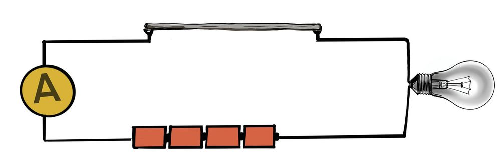
Figure fig_ch05_p088_01 (Page 88)
BASIC SCIENCE - VIII
Electrical Conductivity
Complete the circuit as shown in the figure.
P
Q
Bulb
Ammeter
Battery
Fig. 6.5
A few materials are given in the table. Put them one by
one in the place marked as P, Q. Repeat the experiment
using more objects. Record the observation and
inference.
Object
Bulb glows/ does not
glow
A folded piece of paper
A piece of plastic scale/
ruler
A piece of razor blade
A fine iron wire
Aluminium wire
Table 6.2
88
Conductor of electricity/
not a conductor of
electricity
Page 89
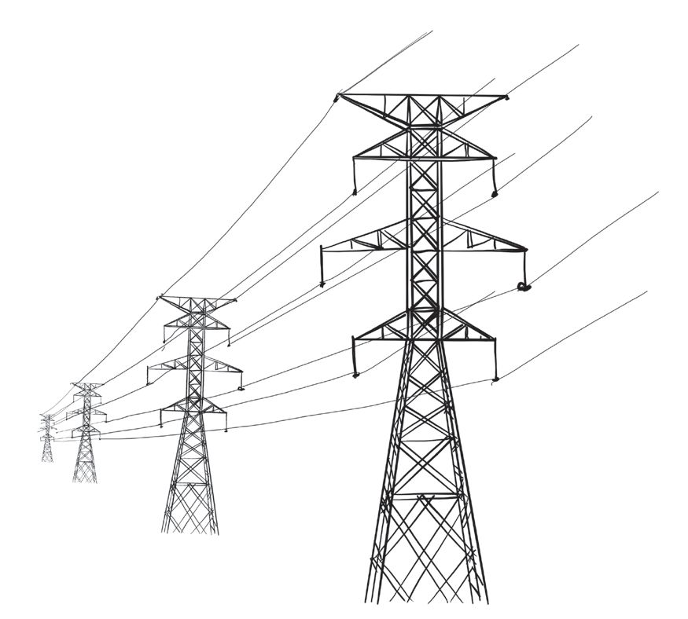
Figure fig_ch05_p089_01 (Page 89)
BASIC SCIENCE - VIII
Which among these objects made the bulb glow?
Are they metals or non -metals?
What can be inferred from this experiment?
All metals conduct electricity. But all the metals
do not conduct electricity to the same extent.
The ability of a material to conduct electricity
through it is known as electrical conductivity.
All matals are electrical conductors.
Silver is the best electrical conductor among the
metals. The electrical conductivity of the metals such
as silver, copper, gold, and aluminium decreases in the
following order.
Fig. 6.6
Silver > Copper > Gold > Aluminium
Which metal is used in household electrical wiring?
Which metal is used to make electric lines for the public
distribution of electricity?
Why is silver not used for this purpose?
Thermal Conductivity
Utensils for cooking are usually made of metals. Which
characteristic properties of metals are utilised in this
case?
The ability of metals to conduct heat is primarily utilised
here, right?
The ability of metals to conduct heat viz., thermal
conductivity is one of the fundamental characteristics
of metals.
Silver is the best conductor of heat among metals.
Metals such as aluminium and copper have relatively
high thermal conductivities. Aluminium is extensively
used for making cooking utensils. Find the reasons.
89
BASIC SCIENCE - VIII
The non metal carbon exists in two main allotropic forms,
diamond and graphite. The distinct characteristics of
diamond and graphite make them suitable for various
applications.
Diamond is one of the materials having highest thermal
conductivity. Since graphite has high electrical conductivity,
it is used as electrodes.
Diamond is used to cut glass due to its high hardness. The
strikingly different properties of diamond and graphite are
due to the differences in the carbon-carbon bonding in them.
Sonority
You can hear the school bell ringing even from a
distance.
Fig. 6.7
Isn't it pleasant to listen to the jingling of anklets or
cymbals?
All these items are made of metals.
Imagine a situation where we use a piece of wood as
the school bell.
Will it jingle like the metal piece?
The ability of metals to produce characteristic sound
when striked with a hard material is known as sonority.
Metallic Lustre
Rub an iron nail with a sand paper.
What change do you observe?
The metals such as gold and silver have a natural shine.
You may observe cutting a piece of sodium metal with
a knife.
Don't you see that the newly formed surface has a
shiny appearance?
The shiny appearance of the surface of metals is known
as metallic lustre.
Certain metals show metallic lustre when they are cut
into pieces or polished.
90
Page 91
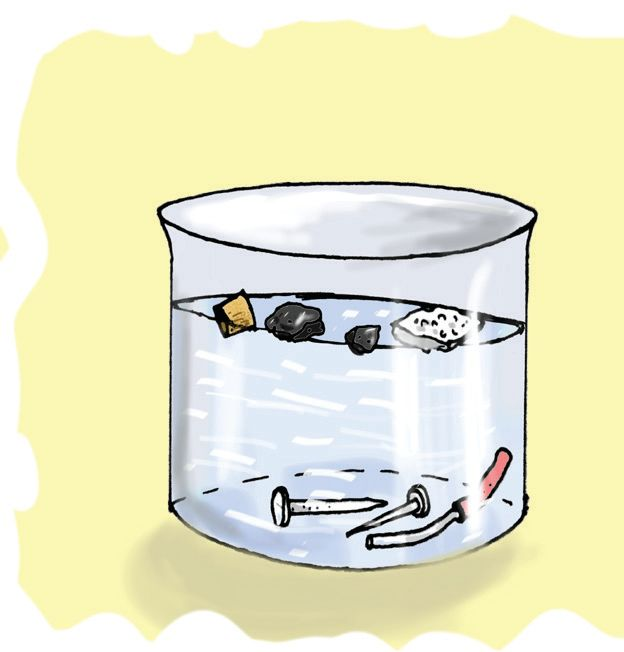
Figure fig_ch05_p091_01 (Page 91)
BASIC SCIENCE - VIII
Examine whether all metals have similar metallic lustre?
Identify the situations in which metallic lustre is made
use of ?
• for making ornaments
•
Hardness
You know that it is easy to cut sodium metal with a
knife.
Is it possible to cut metals such as copper, aluminium
and gold in the same manner?
Lithium, sodium and potassium are soft metals. But
other metals are harder.
Generally metals are hard.
Metals generally exist in the solid state.
Are there metals which exist in liquid state?
Metals generally have high melting point.
However, gallium and caesium are metals having low
melting point. They start melting when placed on our
palm. In other words, they exist in the liquid state on
warmer days.
Metals generally have high boiling points.
Take some articles made up of different metals (iron
nail, aluminium wire), a small piece of wood, charcoal,
thermocol and cork. Put each of them one by one in
water taken in a beaker.
Which among these articles sink into the water? Which
of these float over water?
Metals generally have high density.
Fig. 6.8
Lithium, sodium and potassium are the metals having
low density.
91
Page 92
BASIC SCIENCE - VIII
Metals are substances that generally exist in solid state,
show high conductivity of heat and electricity, metallic
lustre and hardness.
Non-Metals
What are the characteristics of non-metals in
comparison with metals?
• Generally, non-metals are less hard.
• They do not show sonority.
• They generally do not conduct heat.
•
•
•
List some non metals in your Science Diary. Classify
them into solid, liquid and gas.
You have already learnt about the characteristics
of metals and non-metals. These are their physical
properties. Both metals and non-metals differ in their
chemical properties too. Based on this, they undergo
various types of chemical reactions.
Reactions of metals with atmospheric air
Observe the newly formed surface of sodium when
it is cut with a knife. You can see the metallic lustre.
Observe the surface after keeping it exposed to air
for sometime. What change do you observe ? Why did
it lose its metallic lustre? It is because sodium reacts
with the components of air.
Haven't you noticed the dull appearance of the surface
of old objects made of aluminium? Take an aluminium
wire and scrub it with sandpaper. What change do you
observe?
Most of the metals such as copper and magnesium
react with air in the same manner.
92
Page 93
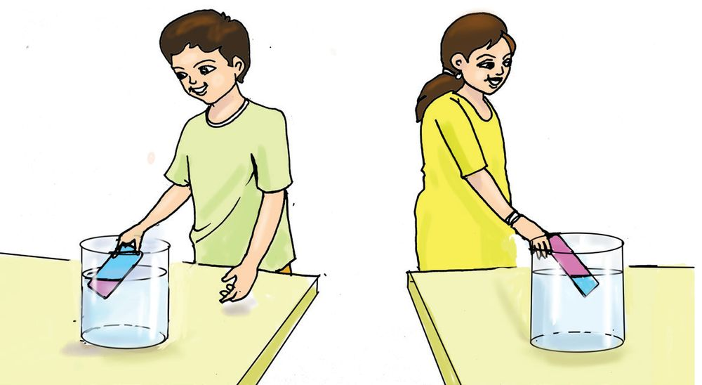
Figure fig_ch05_p093_01 (Page 93)
BASIC SCIENCE - VIII
Burn a piece of magnesium in air. What is left behind?
Magnesium reacts with oxygen in the air to form the
compound magnesium oxide.
Magnesium + Oxygen → Magnesium oxide
2Mg
+ O2 → 2MgO
Dissolve the magnesium oxide formed, in water taken
in a beaker. What is the colour change when a red
litmus paper is dipped in it?
Fig. 6.9
What is the reason?
Magnesium oxide dissolves in water to form magnesium
hydroxide which is a base. Most of the metals ( except
silver, gold and platinum) react with oxygen in air to
form the corresponding oxide. Almost all the metal
oxides show basic nature in the presence of water.
Some metals react with the components of air like
moisture and carbon dioxide in addition to oxygen.
Oxides of metals are generally basic in nature.
Oxides of Non-metals
Carbon combines with oxygen to form carbon dioxide.
C + O2 → CO2
93
Page 94
BASIC SCIENCE - VIII
Do you know how soda water is prepared?
Soda water is prepared by dissolving carbon dioxide in
water at high pressure.
CO2 + H2O → H2CO3
Dip a blue litmus paper in soda water. Notice the
change in colour.
It is clear that soda water is acidic in nature. Carbonic
acid is present in soda water.
Oxides of non metals are generally acidic in nature.
Corrosion of Metals
Haven't you noticed that iron knives used in the kitchen
rust unless wiped and dried properly?
You might have seen the tarnishing of copper. It is
because metals react with air.
The surface of aluminium loses its lustre and becomes
dull because of the same reason.
Metals react with different components of air and
form various compounds. This is known as corrosion
of metals.
There are a number of factors which influence the
rusting of iron. Let us understand what they are.
Let us do an experiment
Materials required
Clean and dry test tubes-4, cork-4, rust free and shiny iron nails -4,
anhydrous calcium chloride, table salt, ordinary water,
distilled water, boiled distilled water and oil.
94
Page 95
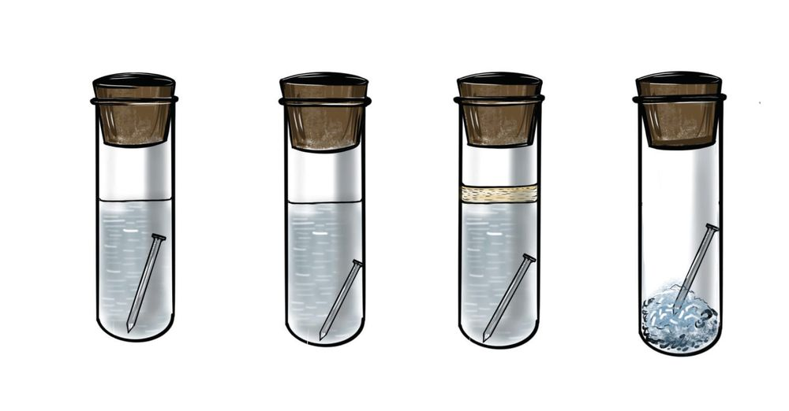
Figure fig_ch05_p095_01 (Page 95)
BASIC SCIENCE - VIII
Procedure
Take four test tubes. Put a rust free and shiny iron nail in each
of them. Add distilled water in the first test tube, salt solution
in the second test tube and distilled water soon after boiling
in the third test tube. Iron nails should be fully immersed in
these three test tubes. Add oil in the third test tube in such
a way that the surface of the water is completely covered
by oil. Take anhydrous calcium chloride or quicklime in the
fourth test tube. All the four test tubes should be closed
immediately with cork after putting the materials.
1
2
3
4
Fig. 6.10
Keep the test tubes at rest for a few days and watch the iron
nails afterwards. Indicate the test tubes in which the iron
nails got rusted.
Air and moisture are present in the first test tube.
How does the salt solution in the second test tube influence
the rusting of iron?
The iron nails in the third and fourth test tubes haven't
undergone any change. What is the reason?
Why was boiled distilled water used in this experiment?
Since the third test tube contains distilled water soon after
boiling and oil floating on the surface of water, the iron nail
cannot come in contact with air. Anhydrous calcium chloride
or quicklime absorbs the moisture present in the fourth test
tube.
Anhydrous calcium chloride absorbs moisture from
atmosphere very quickly. Silica gel and quick lime are also
used for this purpose.
95
Page 96
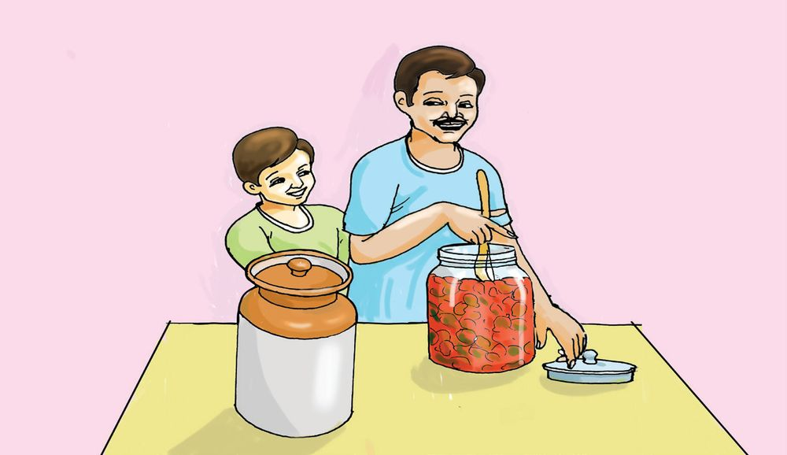
Figure fig_ch05_p096_01 (Page 96)
BASIC SCIENCE - VIII
The factors influencing the rusting of iron can be
found out from this experiment. Record them in your
Science Diary.
Iron rusts when it undergoes chemical reaction with
oxygen, moisture, etc., present in the atmosphere.
The presence of salts like common salt accelerates the
rusting process of iron.
Do you know why iron window bars in houses close to
sea shore corrode faster?
It is clear that the presence of salts in the atmospheric
air causes faster rusting of iron.
Besides iron, which are the other metals used in our
daily life that undergo corrosion in the presence of
atmospheric air?
• Copper
•
Very reactive metals like sodium and potassium are
stored in kerosene. Can you find the reason for it?
After cutting lemon, if the iron knife is left without
wiping, it starts rusting faster. You are familiar with
the acid present in lemon, aren’t you?
Fig. 6.11
96
Page 97
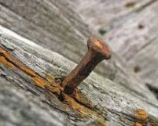
Figure fig_ch05_p097_01 (Page 97)
BASIC SCIENCE - VIII
Iron rusts faster in the presence of acids.
Aluminium and iron react with acids. That is why food
items having sour taste such as pickles and curd are
not stored in vessels made of aluminium and iron.
Do all metals undergo corrosion in the similar manner?
Have you noticed any changes to gold ornaments when
exposed to air?
What can be inferred from this?
The metals which react with the components of air
undergo corrosion.
What are the disadvantages of the corrosion of metals?
• Objects made of metals break due to the deterioration
of their strength.
• Electric circuits stop working.
• Results in economic loss.
20% of the world’s production of iron is lost by corrosion
every year. Hence it is important to prevent rusting of
iron.
Haven't you noticed that window bars made of iron are
painted and iron knives are coated with oil?
This is done to prevent corrosion of iron.
Fig. 6.12
97
Page 98
Figure fig_ch05_p098_01 (Page 98)
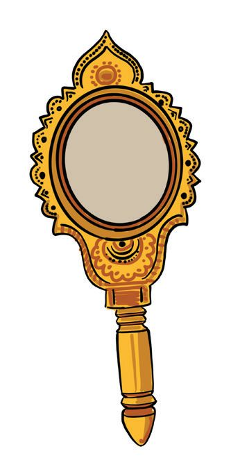
Figure fig_ch05_p098_02 (Page 98)
BASIC SCIENCE - VIII
Now a days utensils made up of stainless steel are
widely used instead of those made of aluminium and
iron. Why?
Stainless steel is an alloy of iron.
Metals are combined with other metals or non metals
to make alloys. It is done to obtain materials with
desirable properties and to resist corrosion. A very
small amount of non metals like carbon, phosphorus,
etc. are also added to such alloys.
For e.g:- stainless steel, brass, bronze
Aranmula Kannadi
Fig. 6.13
The world- renowned ‘Aranmula Kannadi’ is not
made of glass as its name indicates. It is traditionally
crafted using a secret alloy of copper and tin, known
only to traditional artisans. What makes Aranmula
Kannadi unique is that it is handmade without the
aid of any machine. It reflects light because it is
finely polished like a mirror.
Can you suggest any other methods to prevent
corrosion ?
98
Page 99
Figure fig_ch05_p099_01 (Page 99)
BASIC SCIENCE - VIII
As iron objects undergo corrosion, the rust
formed on the surface flakes off as layers, leading
gradually to their complete deterioration.
Although aluminium and copper react with air,
they do not get deteriorated completely as in the
case of iron. Aluminium oxide and basic copper
carbonate formed respectively on the surface of
aluminium and copper act as a coating on it.
Hence, these metals are protected from further
corrosion. Though rust acts as a covering on
the surface of iron articles, it is porous and as a
result the metal again comes in contact with air.
Metals in Human Body
Presence of certain metals is essential for the
normal functioning of human body. They are not
present as free metals. Sodium, potassium, calcium,
iron, cobalt and zinc are examples of such metals.
These elements must be present in the appropriate
amounts in our body. You have already learnt that iron
is present in haemoglobin which brings oxygen from
lungs to cells, and carries carbon dioxide back.
Calcium is the most abundant metal in our body. It
gives strength to bones and teeth. Moreover, it helps
to regulate blood pressure. As human body cannot
synthesise those metals, they should be made available
through food in sufficient quantities.
99
Page 100
Figure fig_ch05_p100_01 (Page 100)
BASIC SCIENCE - VIII
Let us assess
1. Match the following.
A
Name of metal
C
Symbol
Silver
high ductility
Au
Platinum
the highest malleability
Ag
high electrical conductivity
Pt
Gold
2.
B
Characteristic property
The names of certain metals are given in the box.
Calcium, Mercury, Gallium, Copper, Silver
Choose the appropriate metal for the following situations.
a. Reacts with the components of air and forms tarnish on
the surface.
b. It is the best conductor of heat.
c. The metal that melts when placed on the palm.
d. It exists in the liquid state in normal temperature.
e. This metal is present in bones and teeth.
3. Certain metals are given in the following table. Find any
two uses of each and the characteristic property
responsible for it.
Metal
Copper
Gold
Aluminium
Iron
Silver
100
Use
Characteristic property
Page 101
Figure fig_ch05_p101_01 (Page 101)
BASIC SCIENCE - VIII
4.
Oxides of elements A and B are dissolved in water in two
separate beakers.
a) How can you identify the acidic solution and the basic
solution?
b) Which of these elements is more likely to be a metal? Why?
Extended Activities
1. Alloys have a variety of uses. Duralumin, which is used to
make the parts of aircrafts and Alnico, which is used to make
magnets are examples. Collect information about the alloys
and their uses. Present it in your class as slides or charts.
2. Metals are present not only in the human body, but in plants
as well. Collect information regarding the important metals
present in plants and their functions. Prepare a science article
based on this.